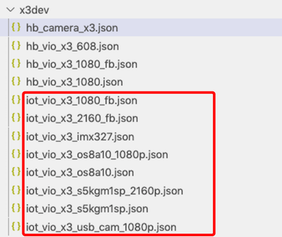
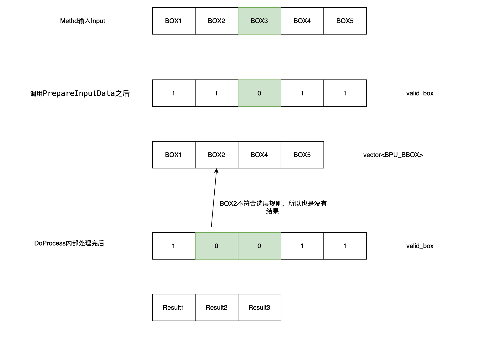

示例：如何基于AI-EXPRESS集成模型¶
当我们使用浮点定点工具转换得到一个异构模型bin文件时，如何集成到AI-Express？
本章节解决该问题！
解决该问题，我们需要关注这几个模块：
图像获取
智能预测
效果展示
运行部署
图像获取部分主要是复用XProto中video_source_plugin中定义的VioPlugin。其中需要修改的地方是金字塔的配置：建议配置金字塔中存在一层图像，该层的分辨率直接是全图检测/分割模型需要的输入大小，避免需要ARM上软件缩放图像。
智能预测模块主要是复用XProto中的SmartPlugin，SmartPlugin内部会调用XStream-Framework接口，完成workflow的计算。集成新模型需要我们关注的主要是这几个地方：模型编译、感知结果数据结构定义、模型预测Method的开发、workflow的构建。
模型编译配置，建议将全图检测/分割模型，编译为NV12输入：因为XJ3上获取到的图像都是NV12图，避免送入检测/分割模型，需要颜色空间转换。对于ROI分类回归模型，则无该建议。
每种模型输出的结果均需要定义一个具体的数据结构，为了能够在XStream-Framework框架中传递，该数据结果需要继承BaseData。
每类模型前后处理不会完全一样，需要继承XStream-Framework框架提供的DnnPredictMethod与DnnPostProcessMethod，分别重写模型的预处理与后处理接口。
效果展示模块需要我们关注的是感知数据结构的序列化接口、AI-Express中定义的xprotobuf数据结构描述文件x3.proto。
运行部署部分主要是解决新增模块的编译、run_example.sh脚本的更新等。
VioPlugin: 用于获取图像，直接复用，适配新的sensor比较麻烦，暂时建议不要对它做扩展。
SmartPlugin: 从XProto总线上获取图像，调用XStream，完成workflow的预测，向总线推送感知结果消息。感知结果与SmartPlugin均可以通过继承进行扩展，用于支持新的感知消息数据类型。
ExampleWebDisplayPlugin: 从XProto总线上获取图像与感知结果，对图像进行编码，对感知结果进行序列化，完成图像与感知结果的匹配，通过websocket方式发给PC浏览器。可通过继承进行扩展，支持不同的感知消息类型。
一. 图像获取¶
VioPlugin提供了图像获取的能力，支持从MIPI Camera、 外接usb camera、本地图像获取图像，计算生成金字塔。
金字塔的原理这里不做详细描述，主要介绍VioPlugin如何配置金字塔每层的大小。
目前AI-EXPRESS适配了几种camera以及回灌图像，对于其他camera型号或者回灌图像大小需求，请找地平线相关AE支持。
VioPlugin金字塔大小配置的文件在：solution/common/video_source_plugin/configs/vio/x3dev目录。该目录有的文件如下：

只需要关注红色框框住的文件，其他文件是单元测试代码需要。
各个文件的用途说明如下表：
|文件|功能说明| | ——– | —– | | iot_vio_x3_1080_fb.json | 1080P本地图像回灌的金字塔配置| |iot_vio_x3_2160_fb.json|2160P本地图像回灌的金字塔配置| |iot_vio_x3_imx327.json|MIPI camera 327的金字塔配置，原图为1080P| |iot_vio_x3_os8a10.json|MIPI camera os8a10的金字塔配置，原图设置为2160P| |iot_vio_x3_os8a10_1080p.json|MIPI camera os8a10的金字塔配置，原图设置为1080P| |iot_vio_x3_s5kgm1sp.json|MIPI camera s5kgm1sp，原图设置为4000x3000| |iot_vio_x3_s5kgm1sp_2160p.json|MIPI camera s5kgm1sp，原图设置为2160P| |iot_vio_x3_usb_cam_1080p.json|外接usb camera，原图分辨率为1080P|
以上所有文件，金字塔每层的配置都是类似的。以iot_vio_x3_usb_cam_1080p.json为例。
金字塔配置在 pym_ds_config这个节点，该节点配置金字塔缩放层。
金字塔包含基本层与缩放层，基本层为0，4，8，12，16，20这6层，图像分辨率分别为原图、原图/2、原图/4等等。 其他层为缩放层，缩放层的缩放范围可以配置，基本层缩放比例上固定的，不需要配置。
金字塔1-3层，为基于基本层0的缩放层；
金字塔5-7层，为基于基本层4的缩放层；以此类推。
通过设置roi_x_i、roi_y_i、roi_w_i、roi_h_i，从对应基本层中扣取该区域ROI；
factor_i用于表示相对对应的基本层，需要缩放的倍数。缩放倍数计算公式为： 64/(64+factor)， factor取值范围为[1-63], factor设置为0表示该层不使能。
最终该缩放层的大小为： ROI * 64/(64+factor)，宽与高分别向下取整。
比如iot_vio_x3_usb_cam_1080p.json这个文件中
"roi_x_6": 0,
"roi_y_6": 0,
"roi_w_6": 960,
"roi_h_6": 540,
"factor_6": 32,
第6层为缩放层，对应的基本层为第4层。原图为1920x1080分辨率，所以第4层分辨率为960x540。 第6层中设置的ROI区域大小为960x540，为整个第4层，缩放系数为64 / (64 + 32) = 2 / 3。 所以第6层图像的大小为 640 x 360
width_6 = 960 x 64 / (64 + 32) = 640
height_6 = 540 x 64 / (64 + 32) = 360
二. 智能预测¶
2.2 模型预测Method的开发¶
XStream-Framework推荐一个模型，使用两个Method完成，一个Method用于模型的预处理，调用bpu-predict的异步预测接口；一个Method用于获取异步预测的结果，进行模型后处理。这样设计的好处是让模型预测与模型后处理在多线程中异步执行，当输入任务足够时，整个pipeline吞吐大，bpu使用率高。
XStream-Framework对这两个Method做了封装，分别为DnnPredictMethod与DnnPostProcessMethod。对于每个模型，需要分别继承它们，重写前后处理接口。
DnnPredictMethod： 完成模型的加载、输入与输出Tensor的分配、异步/同步bpu-predict接口调用。支持以Tensor方式预测，或者ROI方式预测。 继承者需要实现将Method的输入拷贝到输入Tensor，或者将Method的输入拷贝到金字塔与ROI数组中。
DnnPostProcessMethod: 调用HB_BPU_waitModelDone等待异步任务完成，然后进行后处理；或者对于同步任务，直接进行后处理。 继承者需要实现将模型的输出转成Method的输出的接口。
solution_zoo/common/xstream_methods/dnn_predict_method定义了模型预测Method的基类。
solution_zoo/common/xstream_methods/dnn_postprocess_method定义了模型后处理Method的基类。
solution_zoo/common/xstream_methods/dnn_async_data.h中定义了模型预测Method与模型后处理Method之间通信的数据结构。
2.2.1 DnnAsyncData¶
XStream框架定义了DnnAsyncData，用于DnnPredictMethod与DnnPostProcessMethod之间传递的数据。DnnAsyncData的定义与说明如下：
struct DnnAsyncData : public BaseData {
// 模型handle,解析结果时需要通过它获取模型的信息，比如shape、shift等
std::shared_ptr<BPUModelWrapper> dnn_model;
// 输入tensor, 需要由DnnPostProcess进行资源释放
// 最外层的vector,表示bpu任务的数量,与task_handle的维度一致,对于全图检测框类,维度应该为1
std::vector<std::vector<BPU_TENSOR_S>> input_tensors;
// 输出tensor,异步方式需要由DnnPostProcess进行资源释放
std::vector<std::vector<BPU_TENSOR_S>> output_tensors;
// 任务handle, 调用HB_BPU_waitModelDone接口需要
std::vector<BPU_TASK_HANDLE> task_handle;
// 是否调用bpu-predict同步接口
bool dnn_is_sync;
// 对于ROI类输入需要，需要在后处理中
std::vector<int> valid_box;
// pyramid + roi方式，后处理可能依赖ROI
std::vector<BPU_BBOX> dnn_input_box;
// 原始图像大小,后处理坐标映射需要
int src_image_width;
int src_image_height;
void *reserved; // 保留字段,用于扩展
};
2.2.2 DnnPredictMethod¶
DnnPredictMethod的接口说明如下,通过提供模型预处理接口，赋能其他模型完成模型的集成。
class DnnPredictMethod : public SimpleMethod {
public:
DnnPredictMethod();
virtual ~DnnPredictMethod();
// 读取配置文件，加载模型
// DnnPredictMethod::Init中提供了几个配置字段，继承类可以重写Init接口，
// 扩展配置，建议派生类Init接口中调用DnnPredictMethod::Init
// 完成基础参数的读写以及模型加载工作。
int Init(const std::string &cfg_path) override;
void Finalize() override;
// 主逻辑，完全复用，派生类不需要再实现DoProcess;
// 继承者大部分情况不需要重写DoProcess接口，DoProcess接口内部
// 会调用虚函数PrepareInputData接口，完成模型预处理工作;
// DoProcess接口返回DnnAsyncData这个数据结构对象，
// DnnAsyncData这个结构在XStream框架中定义，
// 用于将模型的相关信息、bpu任务信息传递给模型模型后处理模块
std::vector<BaseDataPtr> DoProcess(
const std::vector<BaseDataPtr> &input,
const xstream::InputParamPtr ¶m) override;
public:
std::string model_path_; // 模型文件，Init()时从配置文件读取
std::shared_ptr<BPUModelWrapper> dnn_model_;
// DNN预测结构方式，默认异步,Init()时从配置文件读取
bool dnn_is_sync_ = false;
// 是否是ROI方式,根据它实现不同的PrepareInputData接口，
// 默认非roi输入,Init()时从配置文件读取
bool dnn_run_with_roi_ = false;
// 是否开启group模式，Init()时从配置文件读取
bool dnn_model_group_ = false;
// 运行的控制信息,主要设置模型运行的core_id，Init()时从配置文件读取
BPU_RUN_CTRL_S dnn_ctrl_;
// 原图的宽，Init()时从配置文件读取
int src_image_witdh_;
// 原图的高，Init()时从配置文件读取
int src_image_height_;
// 根据加载的模型，申请模型输入InputTensor大小，
int AllocInputTensor(std::vector<BPU_TENSOR_S> &input_tensors);
// 根据加载的模型，申请模型输出OutputTensor大小
int AllocOutputTensor(std::vector<BPU_TENSOR_S> &output_tensors);
// 释放InputTensor/OutputTensor
void FreeTensor(std::vector<BPU_TENSOR_S> &tensors);
// 派生类需要实现
// PrepareInputData内部需要根据一帧图像目标数量，
// 多次调用AllocInputTensor分配空间.
// PrepareInputData接口内部需要调用
// AllocInputTensor/AllocOutputTensor，完成输入与输出的Tensor分配
// IN: input, param; 对应workflow配置的该Method的输入，
// 正常情况输入都是图片，不排除会有多个输入，比如图像+检测框。param基本不会用，可以不关注
// OUT: input_tensors: PrepareInputData接口需要将预处理后的结果，填充到input_tensors中
// OUT: output_tensors:PrepareInputData接口内部主要需要申请输出空间
// 返回码：0，成功；否则失败；
virtual int PrepareInputData(
const std::vector<BaseDataPtr> &input,
const std::vector<InputParamPtr> param,
std::vector<std::vector<BPU_TENSOR_S>> &input_tensors,
std::vector<std::vector<BPU_TENSOR_S>> &output_tensors) {
return -1;
}
// 派生类需要实现，两个PrepareInputData，根据是否ROI，二选一实现即可。
// 该模式是特殊用法，只支持对所有的ROI打包一起，
// 调用一次预测接口，提高预测速度.
// 模型必须是NV12输入，模型的预处理过程必须是根据roi检测框在原图抠图NV12，
// 缩放到模型输入大小。其他预处理方式均不适用！
// PrepareInputData接口内部需要调用AllocInputTensor/AllocOutputTensor，
// 完成输入与输出的Tensor分配.
// IN: input, param; 对应workflow配置的该Method的输入，
// 正常情况都是图像+检测框两个输入。param基本不会用，可以不关注
// OUT: pyramid: 将input中的图像解析出来，赋值到
// hobot::vision::PymImageFrame，用于 调用bpu-predict接口。
// OUT: input_bbox: 原图分辨率，ROI坐标框，预测需要.
// OUT: valid_box，相对应input中检测框，每个input中的检测框是否送入bpu运算的标志，
// 后处理模块需要.
// OUT: output_tensors:PrepareInputData接口内部主要需要申请输出空间.
// 返回码：0，成功；否则失败
virtual int PrepareInputData(
const std::vector<BaseDataPtr> &input,
const std::vector<InputParamPtr> param,
hobot::vision::PymImageFrame &pyramid,
std::vector<BPU_BBOX> &input_bbox,
std::vector<int> &valid_box,
std::vector<BPU_TENSOR_S> &output_tensors) {
return -1;
}
// 用于获取原图分辨率的配置，后处理可能需要。
// 建议将原图大小配置在配置文件中，Init的时候获取大小，
// GetSrcImageSize的地方直接返回，
// 若程序支持多分辨率输入，
// GetSrcImageSize则可以运行时根据输入返回原图的大小
virtual int GetSrcImageSize(
const std::vector<BaseDataPtr> &input,
int &src_image_height,
int &src_image_width);
};
DnnPredictMethod 支持的配置参数如下：
{
"model_file_path": "parth to hbm/bin",
"dnn_is_sync": false,
"dnn_run_with_roi": false,
"dnn_model_group": false,
"dnn_model_group_id": 0,
"core_id": 0,
"src_image_witdh": 1920,
"src_image_height": 1080,
"others": "inheritor can add other field"
}
配置相关的说明：
model_file_path: 模型hbm/bin文件路径，建议使用绝对路径
dnn_is_sync：使用bpu-predict同步方式与否，true表示同步方式，false为异步方式，建议为异步方式
dnn_run_with_roi：是否上ROI输入类型，true表示ROI输入。ROI输入方式表示BpuPredictMethod的内部实现会调用HB_BPU_runModelWithBbox完成预测，继承者需要实现PrepareInputData(for Rio)这个接口。非ROI方式输入，表示BpuPredictMethod的内部实现会调用HB_BPU_runModel完成预测，继承者需要实现PrepareInputData(for tensor)这个接口。
dnn_model_group：表示是否开启了group方式。对于开启model group方式，则需要设置一个group_id。注意：DnnPredictMethod本身不负责model group的创建，即DnnPredictMethod实现中不会调用HB_BPU_createGroup、HB_BPU_setGroupProportion、HB_BPU_deleteGroup等接口，只有可能调用HB_BPU_setModelGroup。
dnn_model_group_id： group模式，该模型的group id。
进一步看下DnnPredictMethod::DoProcess的实现，大致可以了解模型预测的工作。
std::vector<BaseDataPtr> DnnPredictMethod::DoProcess(
std::vector<BaseDataPtr> &input,
const xstream::InputParamPtr ¶m) {
LOGD << "DnnPredictMethod DoProcess";
HOBOT_CHECK(!input.empty());
RUN_PROCESS_TIME_PROFILER("DnnPredictMethod_DoProcess");
std::vector<BaseDataPtr> output;
{
// 创建BpuAsyncData，用于传递给DnnPostProcessMethod，或者同步预测结果解析使用
auto dnn_result = std::make_shared<DnnAsyncData>();
output.resize(1);
output[0] = dnn_result;
// bpu 任务句柄
std::vector<BPU_TASK_HANDLE> task_handle;
// 本次预测任务返回码，若添加任务失败，则DnnAsyncData中不需传递相关变量
int ret = 0;
if (dnn_run_with_roi_) {
RUN_PROCESS_TIME_PROFILER("Run_Model_ROI");
task_handle.resize(1);
// 输入一个金字塔， 加上一系列ROI
// 预测库bpu-predict内部根据金字塔每层大小以及ROI，自动完成抠图，缩放到模型输入大小
// ROI输入方式，调用HB_BPU_runModelWithBbox进行预测，需要准备金字塔与ROI
// X2和X3版本的金字塔数据结构不同, 需要根据平台做不同处理
PyramidImageFrame pyramid; // get from input
std::vector<BPU_BBOX> input_box;
std::vector<int> valid_box; // 大小和Method输入的检测框一样，框是否有效
std::vector<BPU_TENSOR_S> output_tensor;
{
RUN_PROCESS_TIME_PROFILER("DnnPredictMethod_PrepareInputData");
// 调用派生类实现的预处理部分
ret = PrepareInputData(input, param, pyramid, input_box, valid_box,
output_tensor);
}
if (ret != 0) {
return output;
}
int resizable_cnt = 0;
// 调用BPU-Predict接口完成预测
ret = HB_BPU_runModelWithBbox(
&dnn_model_->bpu_model,
reinterpret_cast<BPU_ADDR_INFO_S *>(&pyramid.img_.down_scale[0]),
pyramid.img_.ds_pym_layer, input_box.data(), input_box.size(),
output_tensor.data(), output_tensor.size(), &dnn_ctrl_,
dnn_is_sync_, &resizable_cnt, &task_handle[0]);
if (ret != 0) {
LOGE << "HB_BPU_runModel failed: " << HB_BPU_getErrorName(ret);
// 释放output_tensor,task_handle
FreeTensor(output_tensor);
HB_BPU_releaseTask(&task_handle[0]);
task_handle[0] = nullptr;
return output;
}
// 这部分逻辑，解决pyramid选层失败，导致roi未送入模型，避免出现bpu结果与输入roi错位的问题
LOGI << "resizable count: " << resizable_cnt;
for (size_t i = 0, bpu_box_idx = 0; i < valid_box.size(); i++) {
if (valid_box[i]) {
valid_box[i] = input_box[bpu_box_idx].resizable;
bpu_box_idx++;
}
}
// 赋值DnnAsyncData,roi方式不需要input_tensors
dnn_result->dnn_model = dnn_model_;
dnn_result->output_tensors.push_back(output_tensor);
dnn_result->task_handle = task_handle;
dnn_result->valid_box = valid_box;
dnn_result->dnn_input_box = input_box;
dnn_result->dnn_is_sync = dnn_is_sync_;
} else {
RUN_PROCESS_TIME_PROFILER("Run_Model");
// Tensor输入方式，调用HB_BPU_runModel完成预测，需要创建输入与输出tensor
std::vector<std::vector<BPU_TENSOR_S>> input_tensor;
std::vector<std::vector<BPU_TENSOR_S>> output_tensor;
// 调用派生类实现的预处理部分 TODO
int rv = GetSrcImageSize(input, dnn_result->src_image_height,
dnn_result->src_image_width);
if (rv != 0) {
LOGE << "Error getting src image size";
}
{
RUN_PROCESS_TIME_PROFILER("DnnPredictMethod_PrepareInputData");
ret = PrepareInputData(input, param, input_tensor, output_tensor);
}
if (ret != 0) {
return output;
}
task_handle.resize(input_tensor.size());
for (size_t i = 0; i < input_tensor.size(); ++i) {
// 申请input_tensor或output_tensor失败
if (input_tensor[i].size() == 0 || output_tensor[i].size() == 0) {
continue;
}
// 调用bpu-predict接口完成预测
ret = HB_BPU_runModel(&dnn_model_->bpu_model, input_tensor[i].data(),
input_tensor[i].size(), output_tensor[i].data(),
output_tensor[i].size(), &dnn_ctrl_,
dnn_is_sync_, &task_handle[i]);
if (ret != 0) {
LOGE << "HB_BPU_runModel failed: " << HB_BPU_getErrorName(ret);
// 释放input_tensor,output_tensor,task_handle
// DnnPostProcessMethod中可通过这些字段判断是否需要后处理解析
FreeTensor(input_tensor[i]);
FreeTensor(output_tensor[i]);
HB_BPU_releaseTask(&task_handle[i]);
task_handle[i] = nullptr;
}
}
// 赋值BpuAsyncData
dnn_result->dnn_model = dnn_model_;
dnn_result->input_tensors = input_tensor;
dnn_result->output_tensors = output_tensor;
dnn_result->task_handle = task_handle;
dnn_result->dnn_is_sync = dnn_is_sync_;
}
}
LOGD << "DnnPredictMethod DoProcess Success";
return output;
}
接下来重点解释下模型预处理这个接口的含义。这两个接口，用于不同的模型，实现其中一个即可。
ROI方式使用限制很多，在后续章节会有补充的说明。大部分模型，均建议使用非ROI方式。
virtual int PrepareInputData(
const std::vector<BaseDataPtr> &input,
const std::vector<InputParamPtr> param,
std::vector<std::vector<BPU_TENSOR_S>> &input_tensors,
std::vector<std::vector<BPU_TENSOR_S>> &output_tensors) {
/*
接口返回0表示成功，其他值失败。
input为预测Method一帧图像的输入，在workflow json文件中配置，比如输入的是图像；
或者输入的是图像+人体检测框；或者输入的是图像+人体关键点等等。
param参数主要是使用XStream框架完成参数动态更新的需求。若无该需求，可以不关注它
input_tensors,是该接口的输出。每个模型可能有多个输入，每个输入用一个BPU_TENSOR_S表示。
所以std::vector<BPU_TENSOR_S>表示的是模型的一次输入。
对于全图检测，一帧图像可能只需要一次预测就可以。但是对于基于检测框做的一些分类任务，一帧图像
可能含有多个检测框，每个检测框需要单独进行预测，那么这种场景，一帧图像就需要对每个检测框分别
预处理，得到每个检测框的输入，所以input_tensors有个外围的vector。input_tensors里面对应
每个目标的输入，顺序与input中传进来的检测框是一致的。
output_tensors，是该模型的输出，PrepareInputData中主要根据模型的输出数量分配模型一次预测
的输出tensor空间std::vector<BPU_TENSOR_S>。对应一帧中有多个检测框，则会对每个检测框的预测
单独分配输出空间。
*/
}
virtual int PrepareInputData(
const std::vector<BaseDataPtr> &input,
const std::vector<InputParamPtr> param,
hobot::vision::PymImageFrame &pyramid,
std::vector<BPU_BBOX> &input_bbox,
std::vector<int> &valid_box,
std::vector<BPU_TENSOR_S> &output_tensors) {
/*
接口返回0表示成功，其他值失败。
input为预测Method一帧图像的输入，在workflow json文件中配置，该种模式输入一般是
图像+检测框。
param参数主要是使用XStream框架完成参数动态更新的需求。若无该需求，可以不关注它。
pyramid为输出参数，用于从input中，获得图像金字塔信息，然后将金字塔结果赋值到pyramid中。
input_bbox为需要送入模型分析的检测框，和input中传入的检测框区别是input中可能存在一些检测框，
其数据的状态为无效或者被过滤，则input_bbox中不应该包含这些检测框。
valid_box主要用于和input中传入的检测框映射，模型后处理需要，模型后处理需要这个valid_box,
将bpu的预测结果与具体的input的检测框匹配。
output_tensors, 目前该参数与上一个接口有些诧异，主要是由BPU-PREDICT接口差异导致。
为理解方便，可以假设ROI模式，模型的输出只有一个；对于输出有多个的，当前的接口不是很好解释，
不建议使用ROI模式。鉴于此，该接口后续可能伴随着BPU-PREDICT接口的升级而发生改变。
*/
}
2.2.3 DnnPostProcessMethod¶
DnnPostProcessMethod的作用是对bpu的预测结果进行模型后处理，解析成物理有意义的数据结构。DnnPostProcessMethod通过提供模型后处理接口，赋能其他模型的集成。
class DnnPostProcessMethod : public SimpleMethod {
public:
DnnPostProcessMethod() {}
virtual ~DnnPostProcessMethod() {}
// 内部加载了配置文件，生成了json对象config_,派生类可以基于该对象解析派生类需要的字段
int Init(const std::string &cfg_path) override;
void Finalize() override;
// 主逻辑，完全复用，派生类不需要再实现DoProcess
// 继承者大部分情况不需要重写DoProcess接口，DoProcess接口内部
// 会调用HB_BPU_waitModelDone获得BPU的预测结果，然后会调用
// 派生类实现的ParseDnnResult结果完成模型后处理的解析
// 最后会释放模型输入与输出tensor
std::vector<BaseDataPtr> DoProcess(
const std::vector<BaseDataPtr> &input,
const xstream::InputParamPtr ¶m) override;
public:
// 释放InputTensor/OutputTensor
void FreeTensor(std::vector<BPU_TENSOR_S> &tensors);
// 派生类需要实现
// 完成模型的后处理，以及转换成Method输出格式;不需考虑tensor的释放
// IN: dnn_result. OUT: frame_result
virtual int ParseDnnResult(DnnAsyncData &dnn_result,
std::vector<BaseDataPtr> &frame_result);
};
DnnPostProcessMethod的DoProcess比较简单，如下所述：
std::vector<std::vector<BaseDataPtr>> DnnPostProcessMethod::DoProcess(
const std::vector<std::vector<BaseDataPtr>> &input,
const std::vector<xstream::InputParamPtr> ¶m) {
LOGD << "DnnPostProcessMethod DoProcess";
HOBOT_CHECK(input.size() == 1) << "only support DnnAsyncData";
RUN_PROCESS_TIME_PROFILER("DnnPostProcessMethod_DoProcess");
std::vector<BaseDataPtr> output;
{
// DnnPostProcessMethod的输入只有一个，输入数据就是DnnAsyncData
auto dnn_async_data = std::static_pointer_cast<DnnAsyncData>(input[0]);
// 调用HB_BPU_waitModelDone接口，等待bpu异步任务完成
if (!dnn_async_data->dnn_is_sync) {
for (size_t i = 0; i < dnn_async_data->task_handle.size(); ++i) {
BPU_TASK_HANDLE &task_handle = dnn_async_data->task_handle[i];
if (task_handle == nullptr) continue;
if (!HB_BPU_waitModelDone(&task_handle)) {
HB_BPU_releaseTask(&task_handle);
}
}
}
// 调用派生类的接口，完成模型后处理，将结果转换成Method的输出格式
{
RUN_PROCESS_TIME_PROFILER("ParseDnnResult");
int ret = ParseDnnResult(*dnn_async_data, output);
if (ret != 0) {
LOGE << "ParseDnnResult failed";
}
}
// 释放输入与输出Tensor
for (size_t i = 0; i < dnn_async_data->input_tensors.size(); ++i) {
if (!dnn_async_data->input_tensors[i].empty()) {
FreeTensor(dnn_async_data->input_tensors[i]);
}
}
for (size_t i = 0; i < dnn_async_data->output_tensors.size(); ++i) {
if (!dnn_async_data->output_tensors[i].empty()) {
FreeTensor(dnn_async_data->output_tensors[i]);
}
}
}
return output;
}
下面说明下后处理接口，接口描述也很简单
int ParseDnnResult(DnnAsyncData &dnn_result,
std::vector<BaseDataPtr> &frame_result)
/*
接口返回0表示成功，其他值失败。
dnn_result为模型预处理与模型后处理传递的数据，调用ParseDnnResult时，说明模型输出
的Tensor已经赋值。
frame_result为该Methd一帧图像对应的输出。
*/
2.2.4 ROI方式进一步解释¶
DnnPredictMethod中ROI方式对应的预处理接口中input_bbox、valid_box以及method输入检测框的关系，用下面一个示例说明。

这里的示例，预测Method输入5个BOX，其中BOX3 可能被之前的Method模块处理，标志为过滤状态，所以不需要送入到模型中预测。
因此派生类在实现PrepareInputData接口的时候，应该将valid_box设置为[1,1,0,1,1]。valid_box大小与Method输入的检测框大小一致，而把input_bbox设置为[BOX1, BOX2, BOX4, BOX5],表示希望对这4个检测框做预测。
ROI方式，内部实现是基于地平线芯片中图像金字塔与硬件Resize模块完成图像抠图缩放，硬件Resize有缩放比例限制，导致不是所有的检测框，都可以缩放到模型输入大小，所有我们预处理后，需要分析的4个检测框，可能不能完全得到预测，比如BOX2。
当DnnPredictMethod::DoProcess接口内部调用完BPU-PREDICT的HB_BPU_runModelWithBbox接口，就可以知道哪些检测框不符合金字塔选层缩放规则，所以DnnPredictMethod::DoProcess内部会更新valid_box的状态，设置为[1,0,0,1,1]，同时送入bpu的任务其实只有BOX1， BOX4， BOX5。
这样当后处理Method得到模型的预测结果后，解析得到三个结果，再通过valid_box，就可以得知预测结果与哪个检测框匹配。
2.2.5 模型集成的示例¶
待补充。计划放在XStream的tutorial中。
三. 效果展示¶
当我们将模型的前后处理均实现好后，可以尝试复用smart_plugin，完成模型的预测，使用web_display_plugin将图像与感知结果通过websocket方式发给web浏览器。
3.1 CustomSmartMessage¶
solution_zoo/common/xproto_plugins/smart_plugin/include/smart_plugin/message/custom_smart_message.h中定义了xproto::message::CustomSmartMessage。
CustomSmartMessage为SmartPlugin内部调用xstream执行workflow得到的智能感知结果，用于推送到xproto消息总线。
当前CustomSmartMessage参杂着一些业务代码，但是不影响可扩展。后续CustomSmartMessage可能择机重构。
#define TYPE_SMART_MESSAGE "XPLUGIN_SMART_MESSAGE"
struct CustomSmartMessage : SmartMessage {
explicit CustomSmartMessage(
xstream::OutputDataPtr out) : smart_result(out) {
// 消息类型。派生类需要换另外一个名字
type_ = TYPE_SMART_MESSAGE;
}
// 序列化，可以先不关注该接口
std::string Serialize() override;
// 序列化，发送给web展示端的图像，可能是基于原图做了缩放
// 所以需要将对应的感知结果，缩放到web图的大小。
// CustomSmartMessage的smart_result保存的都是原图分辨率下的坐标信息
// 派生类需要重点实现该接口。
// 该接口的实现依赖x3.proto。具体描述如下
std::string Serialize(int ori_w, int ori_h, int dst_w, int dst_h) override;
protected:
xstream::OutputDataPtr smart_result;
};
扩展方式：
1） 评估是否可以直接复用CustomSmartMessage，大概率是可以
2） 若必须扩展，则继承CustomSmartMessage，设置不同的type_类别，根据需要重写Serialize接口。
3.2 SmartLegibleMessage¶
先安装host packet包. /home/xxx/.horizon/ddk/xj3_aarch64/xproto/include/xproto/msg_type/smart_legible_message.h中定义了xproto::message::SmartLegibleMessage SmartPlugin内部调用xstream执行workflow得到的智能感知结果，SmartPlugin根据感知结果进一步转换成SmartLegibleMessage并推送到数据总线。
#define TYPE_SMART_LEGIBLE_MESSAGE "XPLUGIN_SMART_LEGIBLE_MESSAGE"
/**
* Target
* @type_: 目标类型
* @track_id_: 目标id
* @snap_img_: 抓拍图集合
* @boxs_: 人体框/人脸框等集合
* @lmks_: 人体关键点/人脸关键点等集合
* @attributes_: 年龄/性别/手势识别结果等集合
* @face_feature_: 非加密人脸特征
* @face_pose_: 人脸朝向
* @body_seg_: 人体分割集合
* @map_seg_: 全图分割结果
*/
struct XPROTO_EXPORT Target {
std::string type_;
uint64_t track_id_;
std::vector<ImageFramePtr> snap_img_;
std::vector<BBoxPtr> boxs_;
std::vector<LandmarksPtr> lmks_;
std::vector<AttributePtr> attributes_;
FloatFeaturePtr face_feature_;
Pose3DPtr face_pose_;
std::vector<SegmentationPtr> body_seg_;
SegmentationPtr map_seg_;
};
typedef std::shared_ptr<Target> TargetPtr;
/**
* SmartData
* @timestamp_: 原视频帧的时间戳
* @error_code_: 错误码
* @targets_: 目标集合
*/
struct XPROTO_EXPORT SmartData {
uint32_t error_code_;
std::vector<TargetPtr> targets_;
};
/**
* SmartMessage
* @time_stamp_: 时间戳
* @sequence_id_: 帧序号
* @background_img_: 背景图像数据, nv12/jepg等
* @smart_message_: 智能信息
*/
struct XPROTO_EXPORT SmartLegibleMessage : public xproto::XProtoMessage {
int channel_id_;
uint64_t time_stamp_;
uint64_t frame_id_;
uint64_t sequence_id_;
std::string image_name_;
std::string img_serialize_type_;
ImageFramePtr background_img_; // 仅包含原图编码后的jpg图像, 即金字塔0层图像
ImageFramePtr paramid_img_; // 金字塔图像数据，仅限进程内使用
SmartData smart_data_;
SmartLegibleMessage() {
type_ = TYPE_SMART_LEGIBLE_MESSAGE;
background_img_ = nullptr;
paramid_img_ = nullptr;
img_serialize_type_ = kSmartImageTypeJpg; // default jpg
}
SmartLegibleMessage(const SmartLegibleMessage &example);
SmartLegibleMessage &operator=(const SmartLegibleMessage &example);
virtual ~SmartLegibleMessage() = default;
std::string Serialize() override;
bool DeSerialize(const std::string &data) override;
virtual bool Serialize(std::string &data, int ori_w, int ori_h, int dst_w,
int dst_h) {
return true;
}
};
SmartLegibleMessage相比workflow得到的只能感知结果更易读，并且提供了序列化/反序列化接口，用户直接使用即可，不需要修改此message。
3.3 x3.proto¶
上面提到CustomSmartMessage或者CustomSmartMessage的序列化接口Serialize，需要将感知结果通过proto-buf序列化成字符串。
AI-Express根据经验，整理了x3.proto，应付大部分场景。使用者可以直接复用。
syntax = "proto3";
package x3;
option optimize_for = LITE_RUNTIME;
/**
* 字节数组
* @type_ {1} 类型名称
* @score_ {2} 置信度
* @array_ {3} 字节数组
* @name_ {4} 数据名称
* @specific_type_ {5} 数据别称
*/
message CharArray {
string type_ = 1;
float score_ = 2;
bytes array_ = 3;
string name_ = 4;
string specific_type_ = 5;
}
/**
* Float 数组
* @type_ {1} 类型名称
* @score_ {2} 置信度
* @value_ {3} 值
* @name_ {4} 数据名称
* @specific_type_ {5} 数据别称
*/
message FloatArray {
string type_ = 1;
float score_ = 2;
repeated float value_ = 3;
string name_ = 4;
string specific_type_ = 5;
}
/**
* Float 2维矩阵
* @type_ {1} 类型名称
* @score_ {2} 置信度
* @arrays_ {3} float数组
* @name_ {4} 数据名称
* @specific_type_ {5} 数据别称
*/
message FloatMatrix {
string type_ = 1;
float score_ = 2;
repeated FloatArray arrays_ = 3;
string name_ = 4;
string specific_type_ = 5;
}
/**
* 坐标点
* @x_ {1} x坐标
* @y_ {2} y坐标
* @score_ {3} 置信度
*/
message Point {
float x_ = 1;
float y_ = 2;
float score_ = 3;
}
/**
* 坐标点集合
* @type_ {1} 类型名称
* @points_ {2} 坐标点集合
* @name_ {3} 数据名称
* @specific_type_ {4} 数据别称
*/
message Points {
string type_ = 1;
repeated Point points_ = 2;
string name_ = 3;
string specific_type_ = 4;
}
/**
* 检测框
* @type_ {1} 类型名称
* @top_left_ {2} 左上点
* @bottom_right_ {3} 右下点
* @score_ {4} 置信度
* @name_ {5} 数据名称
* @specific_type_ {6} 数据别称
*/
message Box {
string type_ = 1;
Point top_left_ = 2;
Point bottom_right_ = 3;
float score_ = 4;
string name_ = 5;
string specific_type_ = 6;
}
/**
* 属性
* @type_ {1} 类型名称，包括年龄、性别、眼镜、口罩、活体信息、车辆信息、非机动车信息,道路状况
* @value_ {2} 值
* @value_string_ {3} 字符串表示
* @score_ {4} 置信度
* @name_ {5} 数据名称
*/
message Attributes {
string type_ = 1;
float value_ = 2;
string value_string_ = 3;
float score_ = 4;
string name_ = 5;
}
/**
* 图片信息
* @buf_ {1} 图片二进制流
* @buf_ {2} 图片类型，如：灰度图、YUV420、NV21、NV12、BGR、JPEG
* @width_ {3} 图片宽度
* @height_ {4} 图片高度
*/
message Image {
bytes buf_ = 1;
string type_ = 2;
uint32 width_ = 3;
uint32 height_ = 4;
}
/**
* 智能帧跟踪目标信息
* @type_ {1} 跟踪目标类型名称，如：人、车、动物、非机动车
* @track_id_ {2} 跟踪目标ID号
* @imgs_ {3} 抓拍图
* @sub_targets_ {4} 子目标，目前车牌作为车的子目标存在
* @boxes_ {5} 检测框集合
* @attributes_ {6} 属性集合，如：年龄、性别、眼镜、口罩、活体信息、车辆类型、车辆颜色、车辆速度、车辆所在车道
* @points_ {7} 多个坐标点集合，如：人脸关键点、人体骨骼点、人体分割图的坐标点
* @float_arrays_ {8} Float点集合，比如人脸姿态，gis信息
* @float_matrixs_ {9} Float矩阵集合，比如人体分割结果
* @char_arrays_ {10} 字节数组集合，如加密后的特征
*/
message Target {
string type_ = 1;
uint64 track_id_ = 2;
repeated Image imgs_ = 3;
repeated Target sub_targets_ = 4;
repeated Box boxes_ = 5;
repeated Attributes attributes_ = 6;
repeated Points points_ = 7;
repeated FloatArray float_arrays_ = 8;
repeated FloatMatrix float_matrixs_ = 9;
repeated CharArray char_arrays_ = 10;
}
/**
* 智能帧信息
* @timestamp_ {1} 原视频帧的时间戳
* @error_code_ {2} 错误码
* @sequence_id_ {3} 图像预测序号
* @channel_id_ {4} 图像channel
* @frame_id_ {5} 预测frame id
* @targets {6} 跟踪目标集合
*/
message SmartLegibleMessage {
fixed64 timestamp_ = 1;
uint32 error_code_ = 2;
uint64 sequence_id_ = 3;
uint32 channel_id_ = 4;
uint64 frame_id_ = 5;
repeated Target targets_ = 6;
}
/**
* 统计信息
* @targets {1} 统计信息集合
*/
message StatisticsMessage {
repeated Attributes attributes_ = 1;
}
/**
* 控制信息
* @type_ {1} request/reply或其他自定义字段
* @timestamp_ {2} 时间戳, 返回此状态获取的时间戳
* @cmd_id_ {3} 控制命令id, 唯一代表一次命令请求
* @value_ {4} 控制命令内容
*/
message ControlMessage {
string type_ = 1;
fixed64 timestamp_ = 2;
uint64 cmd_id_ = 3;
bytes value_ = 4;
}
/**
* X3 Protobuf: Last Result Message
* @timestamp_ {1} timestamp
* @img_ {2} orc img
* @smart_msg_ {3} smart frame info
* @capture_msg_ {4} capture frame info
* @Statistics_msg_ {5} statistics info
* @control_msg_ {6} command info
*/
message FrameMessage {
fixed64 timestamp_ = 1;
Image img_ = 2;
SmartLegibleMessage smart_msg_ = 3;
CaptureMessage capture_msg_ = 4;
StatisticsMessage Statistics_msg_ = 5;
ControlMessage control_msg_ = 6;
}
具体序列化示例，可以参考CustomSmartMessage::Serialize(int ori_w, int ori_h, int dst_w, int dst_h)接口实现，或者示例soluton中的实现。
3.4 SmartPlugin¶
solution_zoo/common/xproto_plugins/smart_plugin中定义了类xproto::SmartPlugin。SmartPlugin内部会加载xstream workflow，订阅iotvioplugin产生的金字塔图像消息，送入xstream中进行预测，获得预测结果后，转换成感知结果，推送到xproto消息总线。
class SmartPlugin : public XPluginAsync {
public:
SmartPlugin() = default;
// 派生类的构造函数需要调用
// SmartPlugin::SmartPlugin(const std::string& config_file)
explicit SmartPlugin(const std::string& config_file);
// 下面几个接口，派生类可以不需要重写
~SmartPlugin() = default;
int Init() override;
int DeInit() override;
int Start() override;
int Stop() override;
std::string desc() const { return "SmartPlugin"; }
private:
// 获取单路图像，workflow配置的图像输入节点名字
// SmartPlugin派生类可以根据需要修改输入节点的名字
// 但是必须保证该接口返回的图像输入节点名字和xstream json配置中一致
// 派生类需要关注该接口，若workflow输入也定义为image，则可以不重写
virtual std::string GetWorkflowInputImageName() {
return "image"; // 当前沉淀的solution均使用image这个
}
// 创建xproto框架下感知结果的消息对象
// 感知结果消息对象必须是CustomSmartMessage或者集成自CustomSmartMessage
// 输入参数xstream_out为xstream workflow执行完成，xstream回调返回的数据对象
// 派生类需要关注该接口，若需要生成其他的消息，则需要重写该接口
virtual std::shared_ptr<CustomSmartMessage>
CreateSmartMessage(xstream::OutputDataPtr xstream_out) {
// 当前沉淀的解决方案，默认为CustomSmartMessage对象
return std::make_shared<CustomSmartMessage>(xstream_out);
}
// 放在单独线程中实现, 自动将workflow结果转换成SmartLegibleMessage结果
void CreateSmartLegibleMessage(xstream::OutputDataPtr xstream_out);
};
由于iotvioplugin当前不支持扩展，产生的消息类型是固定的，所以对于SmartPlugin，未提供订阅图像消息的扩展接口。
使用SmartPlugin，需要关注的配置文件如下,主要是需要配置xstream的workflow配置文件。
{
"xstream_workflow_file": "det_mot.json",
"codec_param": {
"use_vb": 0,
"jpeg_quality": 80,
"frame_buf_depth": 3,
"is_cbr": 1,
"bitrate": 6000,
"jpg_encode_time": 0
}
}
扩展方式：
1）评估现有SmartPlugin，一般情况是可以复用。但是若需要发送的消息类型不是CustomSmartMessage，则必须要继承SmartPlugin
2）若继承SmartPlugin，则需要重写GetWorkflowInputImageName以及CreateSmartMessage这两个接口，构造函数中调用SmartPlugin::SmartPlugin(const std::string& config_file)。派生类的实现使用XPLUGIN_REGISTER_MSG_TYPE注册下感知结果消息。其他接口不太需要关注。
3.5 WebDisplayPlugin¶
solution_zoo/common/xproto_plugins/smart_plugin/web_display_plugin中定义了WebDisplayPlugin。
WebDisplayPlugin内部会从消息总线获取vioplugin发过来的图像消息，以及smartplugin发送过来的感知结果消息。
WebDisplayPlugin内部会对图像进行jpg编码，同时调用感知结果消息的序列化接口进行序列化，再进行图像与感知结果的匹配，最后通过websocket发送给web前端。
WebDisplayPlugin的定义如下：
class WebDisplayPlugin : public xproto::XPluginAsync {
public:
WebDisplayPlugin() = delete;
// 派生类构造的时候需要调用WebsocketPlugin::WebsocketPlugin(std::string config_path)
explicit WebDisplayPlugin(std::string config_path);
~WebDisplayPlugin() override;
// 派生类对下面这几个接口均不需要重写
int Init() override;
int Start() override;
int Stop() override;
std::string desc() const { return "WebsocketPlugin"; }
private:
// 这里需要与SmartPlugin产生的感知消息匹配
// 一般情况，若SmartPlugin的派生类产生新的消息类型
// (继承CustomSmartMessage),则需要新建类继承WebDisplayPlugin，
// 重写GetSmartMessageType接口
virtual std::string GetSmartMessageType() {
// 当前解决方案默认使用TYPE_SMART_MESSAGE
return TYPE_SMART_MESSAGE;
}
};
WebsocketPlugin的配置信息如下：
{
"layer": 4
}
layer主要设置iotvioplugin产生的图像的哪一个基础层【0， 4， 8， 12， 16】之类，将该层图像编码成jpg，发送给web。
若layer不是第0层，则调用感知消息的Serialize(int ori_w, int ori_h, int dst_w, int dst_h)接口时，会将感知结果中的检测框与坐标点之类的结果，缩放到对应layer层分辨率上，确保发给web的图像与感知结果，分辨率空间是一致。
扩展方式：
1）若SmartPlugin未被继承，则大概率WebDisplayPlugin也不需要被继承，可以直接复用。
2）若需要继承WebDisplayPlugin，则简单重写GetSmartMessageType接口，在派生类构造中调用WebDisplayPlugin::WebDisplayPlugin(std::string config_path)即可。
四. 运行部署¶
打包的示例solution，需要提供Method的工厂接口实现，main函数中需要完成Plugin的创建与启动。
namespace xstream {
namespace method_factory {
MethodPtr CreateMethod(const std::string &method_name) {
if ("Yolov3PredictMethod" == method_name) {
return MethodPtr(new xstream::Yolov3PredictMethod());
} else if ("Yolov3PostProcessMethod" == method_name) {
return MethodPtr(new xstream::Yolov3PostProcessMethod());
} else if ("Mobilenetv2PredictMethod" == method_name) {
return MethodPtr(new xstream::Mobilenetv2PredictMethod());
} else if ("Mobilenetv2PostProcessMethod" == method_name) {
return MethodPtr(new xstream::Mobilenetv2PostProcessMethod());
} else {
return MethodPtr();
}
}
} // namespace method_factory
} // namespace xstream
main函数的参考实现如下：
static void signal_handle(int param) {
std::cout << "recv signal " << param << ", stop" << std::endl;
if (param == SIGINT) {
exit_ = true;
}
}
int main(int argc, char **argv) {
std::string vio_config_file = std::string(argv[1]);
std::string smart_config_file = std::string(argv[2]);
std::string websocket_config_file = std::string(argv[3]);
signal(SIGINT, signal_handle);
signal(SIGPIPE, signal_handle);
// 创建plugin对象
auto vio_plg = std::make_shared<VioPlugin>(vio_config_file);
auto smart_plg = std::make_shared<SmartPlugin>(smart_config_file);
auto websocket_plg = std::make_shared<WebsocketPlugin>(websocket_config_file);
// 分别初始化
auto ret = vio_plg->Init();
if (ret != 0) {
return -1;
}
ret = smart_plg->Init();
if (ret != 0) {
return -1;
}
ret = websocket_plg->Init();
if (ret != 0) {
return -1;
}
// 分别启动
vio_plg->Start();
smart_plg->Start();
websocket_plg->Start();
while (!exit_) {
std::this_thread::sleep_for(std::chrono::microseconds(40));
}
vio_plg->Stop();
vio_plg->DeInit();
vio_plg = nullptr;
smart_plg->Stop();
websocket_plg->Stop();
smart_plg->DeInit();
websocket_plg->DeInit();
return 0;
}
五. 模型集成示例说明¶
示例中使用的模型为YoloV3与MobilenetV2。通过VioPlugin获取图像，开发两个模型的预测Method与后处理Method，通过SmartPlugin完成模型预测。最后通过WebDisplayPlugin将图像与感知结果发送给PC浏览器。
5.1 模型描述¶
YoloV3模型文件yolov3_nv12_hybrid_horizonrt.bin，模型信息描述如下【通过bpu_predict接口获取模型信息】：
Input num:1：
input[0]: data type: BPU_TYPE_IMG_YUV_NV12, shape:(1,3,416,416), layout: BPU_LAYOUT_NCHW, aligned shape:(1,4,416,416)
Output num:3
output[0]: data type: BPU_TYPE_TENSOR_F32, shape:(1,13,13,255), layout: BPU_LAYOUT_NHWC, aligned shape:(1,13,13,255)
output[1]: data type: BPU_TYPE_TENSOR_F32, shape:(1,26,26,255), layout: BPU_LAYOUT_NHWC, aligned shape:(1,26,26,255)
output[2]: data type: BPU_TYPE_TENSOR_F32, shape:(1,52,52,255), layout: BPU_LAYOUT_NHWC, aligned shape:(1,52,52,255)
MobilenetV2模型文件mobilenetv2_nv12_hybrid_horizonrt.bin，模型信息描述如下：
Input num:1：
input[0]: data type: BPU_TYPE_IMG_YUV_NV12, shape:(1,3,224,224), layout: BPU_LAYOUT_NCHW, aligned shape:(1,4,224,224)
Output num:1
output[0]: data type: BPU_TYPE_TENSOR_F32, shape:(1,1000,1,1), layout: BPU_LAYOUT_NCHW, aligned shape:(1,1000,1,1)
5.2 模型预测与后处理Method开发¶
以模型YoloV3与MobilenetV2为例，集成检测+分类的预测与后处理Method开发。其中检测包括Yolov3PredictMethod、Yolov3PostProcessMethod，分类包括Mobilenetv2PredictMethod、Mobilenetv2PostProcessMethod。详细代码可以参考solution_zoo/common/xstream_messages/。
框架中已包括模型预测+后处理的Method基础类，即DnnPredictMethod与DnnPostProcessMethod。用户集成具体的模型时，需要根据需要实现基类中的成员函数，具体可以参考DnnPredictMethod.
5.2.1 YoloV3¶
根据模型描述信息，该模型的输入是416x416大小的nv12数据，在预测方法Yolov3PredictMethod中，核心工作是在函数PrepareInputData()中准备模型的输入数据。由于输入是nv12数据，所以可以直接使用金字塔图像数据，因此需要配置金字塔层数，详细可以参考VioPlugin金字塔配置，这里不展开描述金字塔的配置。
若对金字塔图像直接缩放，缩放至416x416，势必会产生形变。为了保证模型效果，我们对图像做了padding后，再进行缩放。思路为：直接在原图底部填充黑色，将原图padding为宽高相同的图像（padding_image），再将padding_image缩放至416x416大小。这里为了减小计算量，我们选择合适的金字塔层做输入。
以原图1920x1080为例，金字塔第0层大小为1920x1080，第4层为960x540，第8层为480x270。yolov3模型输入大小是416x416，我们避免padding过多影响算法效果，选择宽高都大于模型输入大小的金字塔图像作为输入。需要以第4层(960x540)为基础层，padding到960x960大小，再缩放到416x416。
以原图3840x2160为例，金字塔第0层大小为3840x2160，第4层为1920x1080，第8层为960x540，需要以第8层(960x540)为基础层，padding到960x960大小，再缩放到416x416。
以原图4000*3000为例，金字塔第0层大小为4000x3000，第4层为2000x1500，第8层为1000x750，第12层为500x375。需要以第8层(1000x750)为基础层，padding到1000x1000大小，再缩放到416x416。
// PrepareInputData的逻辑
// 参考common/xstream/framework/tutorials/stage10/method/Yolov3PredictMethod
1. 从指定金字塔层中取数据，并检查图像宽高大小是否大于模型输入大小(416x416)。若不满足需要报错，一般是vio金字塔配置错误;
2. 申请input_tensor和output_tensor, 基类已实现，可以直接调用;
3. 申请padding_image空间，封装为BPU_Tensor结构，注意使用结束需要释放;
4. 复制金字塔图像数据到padding_image;
5. 缩放padding_image数据到input_tensor;
6. 释放padding_image;
另外，由于模型输出的检测结果是基于输入数据的，所以后续需要缩放到原分辨率大小(后处理中)，这里预测前需要获取原图分辨率GetSrcImageSize()。
后处理中，核心工作是在函数ParseDnnResult()中解析bpu输出结果output_tensor。需要注意的是，这里直接解析出的检测结果是基于输入数据的分辨率，需要将其坐标映射回原图分辨率。假设原图大小(金字塔第0层)1920x1080，金字塔第4层960x540，取金字塔第4层960x540，padding到960x960大小，再缩放到416x416后输入模型预测。
// 映射关系, 原图坐标(x', y'), 输出结果(x, y)
x' = [x * (960.0 / 416.0)] * (1980 / 960)
y' = [y * (960.0 / 416.0)] * (1080 / 540)
这里还需注意的是，由于对原图做了底部的padding，因此需要对映射后的坐标(x’, y’)【主要是y’】，限制在原图坐标范围内。
后处理解析的检测框使用xstream::BBox数据结构来表示。此外，在函数ParseDnnResult()中还需要将解析后的数据封装为xstream-frame框架支持的BaseData数据结构。由于全图可能存在多个目标，结果会有多个检测框，这里需要使用派生数据结构xstream::BaseDataVector，将检测框封装到成员变量datas_中，Yolov3PostProcessMethod的输出数据结构是xstream::BaseDataVectorxstream::BBox.
5.2.2 MobilenetV2¶
根据模型描述信息，该模型的输入是224x224大小的nv12数据，该分类模型需要将roi数据送入模型进行预测。因此在预测方法Mobilenetv2PredictMethod中，需要输入的数据包括金字塔数据以及Yolov3PostProcessMethod输出的roi数据。在函数PrepareInputData()中，核心操作是抠取原图上的roi数据，并缩放到224x224大小。
// PrepareInputData的逻辑
1. 检查输入数据，包括金字塔图像image，以及roi框;
2. 获取金字塔原图数据，设置roi信息, 注意按照Yolov3PostProcessMethod输出的roi格式进行解析;
3. 申请input_tensor和output_tensor, 基类已实现，可以直接调用;
4. 调用bpu接口将原图中roi数据缩放到input_tensor中
后处理中，核心工作是在函数ParseDnnResult()中解析bpu输出结果output_tensor，并封装成框架兼容的BaseData数据类型。与Yolov3PostProcessMethod输出类似，这里同样用xstream::BBox数据结构来表示分类结果。Mobilenetv2PostProcessMethod的输出数据结构是xstream::BaseDataVector<xstream::BBox>.
5.3 SmartPlugin¶
在solution_zoo/yolov3_mobilenetv2_example目录下实现ExampleSmartplugin继承SmartPlugin,使用新的消息SmartLegibleMessage，其消息类型为TYPE_SMART_LEGIBLE_MESSAGE。
class ExampleSmartPlugin : public SmartPlugin {
public:
explicit ExampleSmartPlugin(const std::string& config_file);
private:
std::string GetWorkflowInputImageName() {
return "image";
}
};
这里使用了新的消息TYPE_SMART_LEGIBLE_MESSAGE，此消息是SmartPlugin中生成。
5.4 WebDisplayPlugin¶
yolov3_mobilenetv2_example实现派生类ExamapleWebDisplayPlugin，用于接收ExampleSmartPlugin产生的消息，然后将消息发送给前端展示。
class ExampleWebDisplayPlugin : public WebDisplayPlugin {
public:
explicit ExampleWebDisplayPlugin(std::string config_path);
protected:
std::string GetSmartMessageType() {
// return the message type from exampel_smart_plugin
return TYPE_SMART_LEGIBLE_MESSAGE;
}
};
派生类实现接口GetSmartMessageType()，返回ExampleSmartPlugin产生的消息类型，用于基类WebsocketPlugin注册消息类型时使用，以获得对应的感知结果。
5.5 main 函数实现¶
基于派生类ExampleSmartPlugin，ExampleWebDisplayPlugin以及VioPlugin，我们可以串联完整的workflow，实现yolov3_solution。
int main(int argc, char **argv) {
std::string vio_config_file = std::string(argv[1]);
std::string smart_config_file = std::string(argv[2]);
std::string websocket_config_file = std::string(argv[3]);
std::string log_level(argv[4]);
if (log_level == "-i") {
SetLogLevel(HOBOT_LOG_INFO);
} else if (log_level == "-d") {
SetLogLevel(HOBOT_LOG_DEBUG);
} else if (log_level == "-w") {
SetLogLevel(HOBOT_LOG_WARN);
} else if (log_level == "-e") {
SetLogLevel(HOBOT_LOG_ERROR);
} else if (log_level == "-f") {
SetLogLevel(HOBOT_LOG_FATAL);
} else {
LOGE << "log option: [-i/-d/-w/-f] ";
return 0;
}
signal(SIGINT, signal_handle);
signal(SIGPIPE, signal_handle);
// 创建plugin对象
auto vio_plg = std::make_shared<VioPlugin>(vio_config_file);
auto smart_plg = std::make_shared<ExampleSmartPlugin>(smart_config_file);
auto websocket_plg =
std::make_shared<ExampleWebDisplayPlugin>(websocket_config_file);
auto ret = vio_plg->Init();
if (ret != 0) {
return -1;
}
ret = smart_plg->Init();
if (ret != 0) {
return -1;
}
ret = websocket_plg->Init();
if (ret != 0) {
return -1;
}
vio_plg->Start();
smart_plg->Start();
websocket_plg->Start();
while (!exit_) {
std::this_thread::sleep_for(std::chrono::microseconds(40));
}
vio_plg->Stop();
vio_plg->DeInit();
vio_plg = nullptr;
smart_plg->Stop();
websocket_plg->Stop();
smart_plg->DeInit();
websocket_plg->DeInit();
return 0;
}
在main函数中，分别创建VioPlugin,ExampleSmartPlugin,ExampleWebsocketplugin，并调用Init和Start接口，运行workflow。其中smart_config_file为ExampleSmartPlugin的配置文件，在这里为yolov3_mobilenetv2_example/configs/solution_yolov3.json。
{
"xstream_workflow_file": "./yolov3_solution/configs/workflow_yolov3.json",
"codec_param": {
"use_vb": 0,
"jpeg_quality": 80,
"frame_buf_depth": 3,
"is_cbr": 1,
"bitrate": 6000,
"jpg_encode_time": 0
}
}
其中配置了soluton的workflow文件，即./yolov3_solution/configs/workflow_yolov3.json。
5.6 运行yolov3_solution¶
// 开发机上进行编译打包
bash build_and_deploy.sh
// x3上运行
cd deploy
sh run_example.sh
这样就完成了yolov3_solution从编译到部署的全部步骤。
5.6 workflow配置升级¶
solution的workflow配置文件，即./yolov3_solution/configs/workflow_yolov3.json。 workflow中增加了”declaration”声明，支持SmartPlugin根据此配置转换Workflow的输出结果到具体数据结构SmartLegibleMessage，包含两个主要元素：
typenames: 这里指定了固定的数据类型，目前只支持这7种，不能修改
targets: 指定target包含的属性字段，比如objects这个target类别，包含检测框和分类属性，objects这个字段可以随意定义；targets属性：采用”name:type”的形式, 其中type是typenames指定的类型，name是outputs种的输出字段
以下述workflow为例说明targets含义，targets定义了一个目标类型”objects”: objects包含的属性：
“detect_box:BBox”：detect_box代表检测框，来自outputs中第二个元素，数据类型为BBox
“classify:Classification”：classify代表检测结果，来自outputs中第三个元素，数据类型为Classification
{
"declaration": {
"typenames": [
"Image",
"BBox",
"Landmarks",
"Classification",
"Segmentation",
"FloatFeature",
"Pose3D"
],
"targets": {
"objects": [
"detect_box:BBox",
"classify:Classification"
]
}
},
"max_running_count": 10000,
"inputs": [
"image"
],
"outputs": [
"image",
"detect_box",
"classify"
],
"workflow": [
{
"method_type": "Yolov3PredictMethod",
"unique_name": "Yolov3PredictMethod",
"thread_count": 1,
"inputs": [
"image"
],
"outputs": [
"dnn_yolo"
],
"method_config_file": "./yolov3_predict_method.json"
},
{
"method_type": "Yolov3PostProcessMethod",
"unique_name": "Yolov3PostProcessMethod",
"thread_count": 3,
"inputs": [
"dnn_yolo"
],
"outputs": [
"detect_box"
],
"method_config_file": "./yolov3_post_process_method.json"
},
{
"method_type": "Mobilenetv2PredictMethod",
"unique_name": "Mobilenetv2PredictMethod",
"inputs": [
"image",
"detect_box"
],
"outputs": [
"dnn_mobilenet"
],
"method_config_file": "./mobilenetv2_predict_method.json"
},
{
"method_type": "Mobilenetv2PostProcessMethod",
"unique_name": "Mobilenetv2PostProcessMethod",
"inputs": [
"dnn_mobilenet"
],
"outputs": [
"classify"
],
"method_config_file": "./mobilenetv2_post_process_method.json"
}
]
}
注意：
typenames定义了SmartPlugin支持自动转换的数据类型，数据类型固定，不支持修改
targets中的属性定义，采用”name:type”的形式，其中name随意定义但是必须和outputs中的输出字段保持一致，type必须为typenames中的类型，name或者type前后允许有空格
如果不定义targets，workflow输出无法自动转换成SmartLegibleMessage
SmartPlugin转换workflow结果保存到SmartLegibleMessage类型